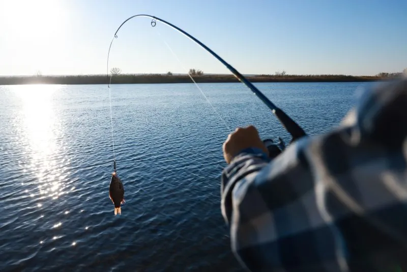
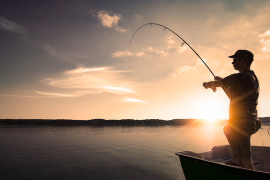
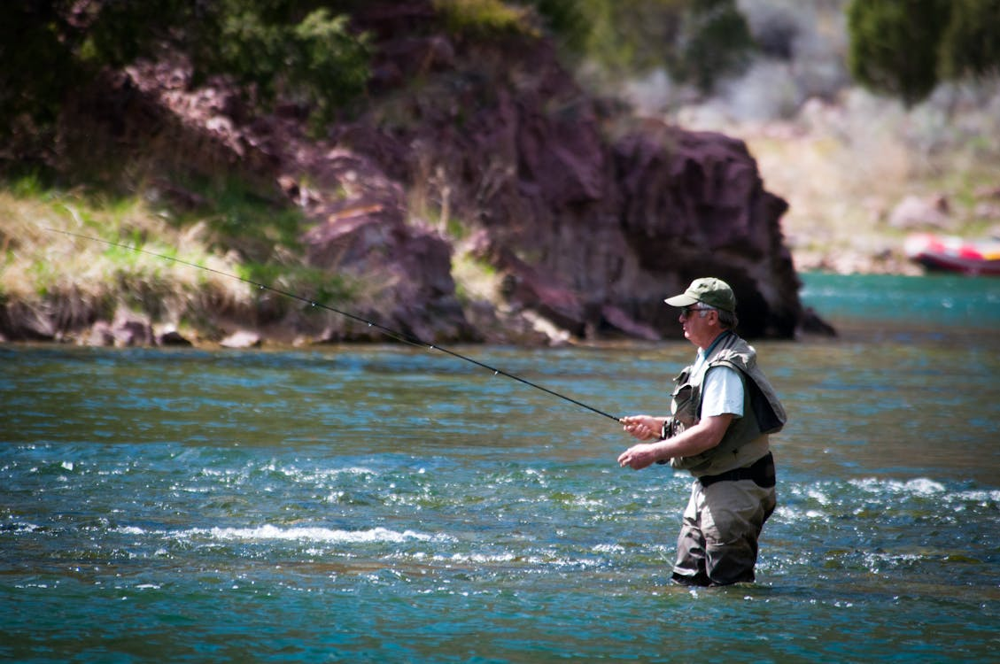

Freshwater fishing!
Types of Freshwater Fishing
- Angling:
The most common form of fishing, involving a rod, reel, and bait or lure.
Popular Freshwater Fish Species
- Bass:
A popular target for anglers, especially largemouth and smallmouth bass.
- Trout:
Found in cold, clean waters, often targeted in fly fishing.
- Catfish:
Found in rivers and lakes, known for their size and strong fighting ability.
- Pike:
A predatory fish found in freshwater lakes and rivers, known for its sharp teeth.
Fishing Gear
- Rod and Reel:
Essential for catching and reeling in fish, available in various types for different fishing methods.
- Bait and Lures:
Used to attract fish; live bait (worms, minnows) or artificial lures can be used.

- Fishing Line:
Typically made of nylon or braided material, with varying strengths based on the species targeted.
History
Freshwater fishing is a popular outdoor activity that involves catching fish in rivers, lakes, ponds, and reservoirs. It can be done using various techniques such as angling with a rod and reel, fly fishing with lightweight artificial flies, or ice fishing in colder climates. Common species targeted include bass, trout, catfish, and pike, each requiring different approaches and equipment. Essential gear for freshwater fishing includes rods, reels, fishing lines, and baits or lures. Anglers must also follow local regulations, such as fishing seasons and catch limits, to preserve fish populations and maintain sustainable practices. Whether for recreation or sport, freshwater fishing offers a connection to nature and a relaxing outdoor experience.
Freshwater fishing has been a popular pastime for centuries, offering both relaxation and the thrill of the catch. It can be practiced in a variety of environments, from quiet lakes and flowing rivers to ponds and reservoirs, each offering unique fishing opportunities. Techniques vary depending on the target species and the fishing environment; for example, fly fishing is commonly used in streams to catch trout, while casting with lures or live bait is popular for bass and catfish. Some anglers even engage in the challenge of ice fishing during winter, drilling holes through frozen lakes to fish in cold conditions.
Creation
Rules and Regulations
Freshwater fishing rules and regulations are designed to ensure sustainable fish populations, protect aquatic ecosystems, and maintain fair practices. Here are some key regulations: Fishing Licenses Most areas require anglers to obtain a fishing license before fishing in freshwater bodies. This helps fund conservation efforts and ensures compliance with local laws. Catch LimitsThere are often specific limits on how many fish can be caught per day, as well as minimum and maximum size limits to protect young or mature fish populations. Fishing Seasons Many species have designated open seasons to prevent overfishing during spawning periods. These seasons may vary by region and fish species.

Fishing Licenses
A valid fishing license is required before fishing in most freshwater areas.
Fishing licenses help fund conservation efforts and ensure adherence to local regulations.
Catch Limits
Limits are placed on the number of fish you can catch per day.
Minimum and maximum size limits may apply to certain species to protect young or mature fish.
Fishing Seasons
Fishing seasons are often set to prevent overfishing during spawning periods.
Check local regulations for specific open seasons and closed periods for each species.
Bait and Gear Restrictions
Certain types of bait may be restricted to prevent the introduction of invasive species.
Some areas may regulate the types of hooks or fishing gear allowed, including nets or traps.
Catch-and-Release Rules
Catch-and-release fishing may be required for certain species to aid in conservation.
Handle fish gently to minimize harm during release, and use proper techniques to avoid injury.
Protected Species
Certain species may be protected due to declining populations, and must not be kept or killed.
Any accidental catch of protected species must be immediately released back into the water.
No Fishing Zones
-
Some areas, such as fish sanctuaries, may be designated as no-fishing zones to protect habitats.
-
These zones allow fish populations to recover and thrive.
Equipment
Freshwater fishing equipment includes a **rod and reel**, which are essential for casting and reeling in fish. The **fishing line** connects the rod to the fish and comes in various materials and strengths. **Bait and lures** attract fish, with live bait or artificial lures depending on the species targeted. Additional gear includes a **tackle box** for organization, **hooks**, and accessories like **pliers** and **measuring tapes**.